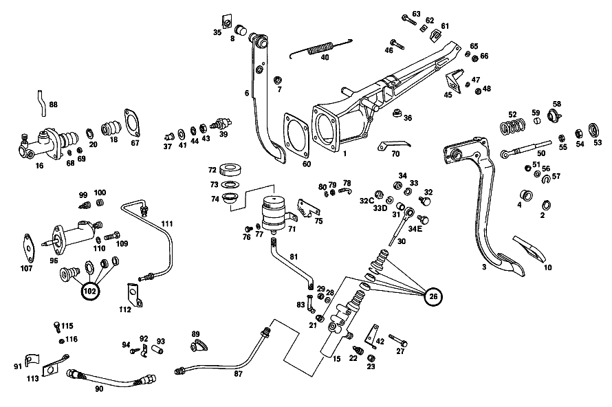

| № | Артикул | Название | Кол. | Примечание | Ограничение |
|---|---|---|---|---|---|
| 1 | A 115 290 12 31 | ПОДШИПНИК | 1 | Рулевое управление: Влево | |
| 2 | N 000471 016001 | Стопорное кольцо | - | Автоматическая коробка переключения передач | |
| 2 | A 094 994 24 00 | Стопорное кольцо | 1 | Автоматическая коробка переключения передач | |
| 3 | A 115 290 28 16 | ПЕДАЛЬ | 1 | Рулевое управление: ВлевоКоробка передач [402] БОЛЬШЕ НЕ ПОСТАВЛЯЕТСЯ | |
| 4 | A 110 291 05 50 | - Втулка подшипника | - | Коробка передач | |
| 4 | A 124 292 00 50 | - Втулка подшипника | 2 | Коробка передач | |
| 6 | A 115 290 23 18 | ПЕДАЛЬ | 1 | Рулевое управление: ВлевоКоробка передач [402] БОЛЬШЕ НЕ ПОСТАВЛЯЕТСЯ | |
| 7 | A 110 292 01 50 | - втулка | 2 | ||
| 8 | A 110 291 05 50 | - Втулка подшипника | - | ||
| 8 | A 124 292 00 50 | - Втулка подшипника | 2 | ||
| 10 | A 110 291 01 82 | Накладка педали | - | Коробка передач | |
| 10 | A 107 291 01 82 | Чехол | 2 | Коробка передач | |
| 10 | A 107 291 01 82 | Чехол | 1 | Рулевое управление: ВправоАвтоматическая коробка переключения передач | |
| 10 | A 107 291 01 82 | Чехол | 1 | Рулевое управление: ВлевоАвтоматическая коробка переключения передач | |
| 15 | A 001 295 15 06 | ГЛАВНЫЙ ЦИЛИНДР | - | Рулевое управление: ВлевоКоробка передач | |
| 15 | A 000 295 77 06 | ГЛАВНЫЙ ЦИЛИНДР | - | Рулевое управление: ВлевоКоробка передач | |
| 15 | A 001 295 87 06 | Главный цилиндр | 1 | Рулевое управление: ВлевоКоробка передач | |
| 16 | A 000 295 85 06 | Главный цилиндр | 1 | Рулевое управление: ВправоКоробка передач [031] FROM CHASSIS: 005,017 024923 015 235021 105,107,108,117,119 054274 110 428723 114 000073 115 243644 | |
| 18 | A 000 295 20 83 | - МАНЖЕТА | 1 | Рулевое управление: ВправоКоробка передач [402] БОЛЬШЕ НЕ ПОСТАВЛЯЕТСЯ | |
| 20 | N 000472 019000 | - Стопорное кольцо | 1 | Рулевое управление: ВправоКоробка передач | |
| 21 | A 000 997 11 86 | - Пробка | 1 | Рулевое управление: ВлевоКоробка передач | |
| 21 | A 000 997 11 86 | - Пробка | 1 | Рулевое управление: ВправоКоробка передач [031] FROM CHASSIS: 005,017 024923 015 235021 105,107,108,117,119 054274 110 428723 114 000073 115 243644 | |
| 22 | A 000 420 10 55 | - Клапан выпуска воздуха | 1 | Коробка передач | |
| 23 | A 000 421 08 87 | - Защитный колпачок | - | Коробка передач | |
| 23 | A 000 421 71 87 | - КОЛПАЧОК | - | Коробка передач | |
| 23 | A 000 421 08 87 | - Защитный колпачок | 1 | Коробка передач | |
| 26 | A 000 586 29 29 | ремкомплект | 1 | ZU 000 295 77 06,001 295 15 06 Рулевое управление: ВлевоКоробка передач [011] FROM CHASSIS: 000,002,010 095794 015 116926 100,102,103,110,112 246727 115 123532 005,017,105,107,108,117,119 000001 | |
| 27 | N 000931 006087 | Винт | - | Рулевое управление: ВлевоКоробка передач | |
| 27 | N 304014 006004 | Винт с 6-гранной головкой | 2 | Рулевое управление: ВлевоКоробка передач | |
| 28 | N 000137 006204 | Пружинная шайба | 2 | Рулевое управление: ВлевоКоробка передач | |
| 29 | N 000934 006013 | Гайка | - | Рулевое управление: ВлевоКоробка передач | |
| 29 | N 304032 006008 | Шестигранная гайка | 2 | Рулевое управление: ВлевоКоробка передач | |
| 30 | A 115 290 06 39 | Тяга привода | 1 | Рулевое управление: ВлевоКоробка передач | |
| 31 | A 110 295 02 50 | - Втулка подшипника | 1 | Коробка передач | |
| 32 | A 094 295 01 00 | болт | - | Коробка передач [037] UP TO CHASSIS: 005,017 069670 015 291785 105,107,108,117,119 110383 110 459240 114: 036288 115: 321996 | |
| 32C | A 115 295 01 72 | Эксцентриковая гайка | 1 | Коробка передач [038] FROM CHASSIS: 005,017 069671 015 291786 105,107,108,117,119 110384 110 459241 114 036289 115 321997 | |
| 33 | N 912004 008102 | Пружинное кольцо | 1 | Коробка передач [037] UP TO CHASSIS: 005,017 069670 015 291785 105,107,108,117,119 110383 110 459240 114: 036288 115: 321996 | |
| 33D | N 000137 008204 | Пружинная шайба | - | Коробка передач | |
| 33D | N 000137 008212 | Пружинная шайба | 1 | Коробка передач [038] FROM CHASSIS: 005,017 069671 015 291786 105,107,108,117,119 110384 110 459241 114 036289 115 321997 | |
| 34 | N 000934 008020 | Гайка | 1 | Коробка передач [037] UP TO CHASSIS: 005,017 069670 015 291785 105,107,108,117,119 110383 110 459240 114: 036288 115: 321996 | |
| 34E | N 000933 008131 | Винт | - | Коробка передач | |
| 34E | N 304017 008016 | Винт с 6-гранной головкой | 1 | M8X16 Коробка передач [038] FROM CHASSIS: 005,017 069671 015 291786 105,107,108,117,119 110384 110 459241 114 036289 115 321997 | |
| 35 | A 000 994 11 51 | предохранитель | 2 | Коробка передач | |
| 36 | A 107 291 00 86 | Упорный буфер | 1 | Коробка передач [002] FROM CHASSIS: 000,002,010 10/50 005191 015 10/50 002586 100,102,103,110,112 10/50 013095 115 10/50 005645 | |
| 37 | A 115 545 00 55 | НАПРАВЛЯЮЩАЯ | 1 | [402] БОЛЬШЕ НЕ ПОСТАВЛЯЕТСЯ | |
| 39 | A 000 545 35 09 | Переключатель | 1 | ВЫКЛЮЧАТЕЛЬ СИГНАЛА ТОРМОЖЕНИЯ | |
| 40 | A 107 993 04 10 | пружина | 1 | ||
| 41 | A 115 291 00 76 | Диск | 2 | Коробка передач | |
| 41 | A 115 291 00 76 | Диск | 1 | Автоматическая коробка переключения передач | |
| 42 | A 115 291 04 41 | УПОР | 1 | Рулевое управление: ВлевоКоробка передач | |
| 43 | A 000 990 92 51 | гайка | 2 | ||
| 44 | N 006797 012250 | Зубчатая шайба | 1 | ||
| 45 | A 115 291 05 40 | ДЕРЖАТЕЛЬ | 1 | Коробка передач [402] БОЛЬШЕ НЕ ПОСТАВЛЯЕТСЯ | |
| 46 | N 000931 006084 | Винт | - | Коробка передач | |
| 46 | N 304017 006027 | Винт с 6-гранной головкой | 1 | M6X45 Коробка передач | |
| 47 | N 000137 006204 | Пружинная шайба | 1 | Коробка передач | |
| 48 | N 000934 006013 | Гайка | - | Коробка передач | |
| 48 | N 304032 006008 | Шестигранная гайка | 1 | Коробка передач | |
| 50 | A 115 290 13 39 | ТЯГА | 1 | Коробка передач | |
| 51 | A 110 291 07 50 | - втулка | 2 | Коробка передач | |
| 52 | A 115 993 79 02 | Нажимная пружина | 1 | Коробка передач | |
| 53 | A 111 291 04 91 | Тарелка пружины | 1 | Коробка передач | |
| 54 | N 070615 010004 | Гайка | 1 | Коробка передач [402] БОЛЬШЕ НЕ ПОСТАВЛЯЕТСЯ | |
| 55 | N 007967 010001 | Гайка | 1 | Коробка передач [402] БОЛЬШЕ НЕ ПОСТАВЛЯЕТСЯ | |
| 56 | N 000125 008418 | Шайба | - | Коробка передач | |
| 56 | N 000125 008443 | Шайба | 1 | 8 MM Коробка передач | |
| 57 | N 006799 006003 | Стопорная шайба | 1 | 6MM Коробка передач | |
| 58 | A 107 291 00 91 | Тарелка пружины | 1 | Коробка передач | |
| 59 | A 110 295 01 50 | - ВТУЛКА | - | Коробка передач | |
| 59 | A 107 291 00 91 | - Тарелка пружины | - | Коробка передач [035] UP TO CHASSIS: 005,017 044670 015 242107 110 444340 114 012453 115: 277483 117: 083071 [036] NO LONGER AVAILABLE: INSTEAD 1 BRACKET 107 291 00 91 | |
| 60 | A 115 431 01 80 | уплотнение | 1 | Коробка передач | |
| 61 | A 115 294 01 40 | ДЕРЖАТЕЛЬ | 1 | Рулевое управление: ВлевоКоробка передач | |
| 62 | A 115 294 00 87 | ВКЛАДКА | 1 | Коробка передач | |
| 63 | N 000931 006084 | Винт | - | Рулевое управление: ВлевоКоробка передач | |
| 63 | N 304017 006027 | Винт с 6-гранной головкой | 1 | M6X45 Рулевое управление: ВлевоКоробка передач | |
| 65 | N 000137 006204 | Пружинная шайба | 1 | ||
| 66 | N 000934 006013 | Гайка | - | Коробка передач | |
| 66 | N 304032 006008 | Шестигранная гайка | 1 | Коробка передач | |
| 67 | A 115 295 00 80 | ПРОКЛАДКА УПЛОТНИТЕЛЬНАЯ | 1 | Рулевое управление: ВправоКоробка передач | |
| 68 | N 912004 008102 | Пружинное кольцо | 2 | Рулевое управление: ВправоКоробка передач | |
| 69 | N 000934 008013 | Гайка | 2 | Рулевое управление: ВправоКоробка передач | |
| 70 | A 115 291 05 41 | УПОР | 1 | Рулевое управление: ВправоКоробка передач [003] FROM CHASSIS: 000,002,010 027624 015 025107 100,102,103,110,112 060475 115 027850 | |
| 71 | A 115 290 01 15 | БАЧОК | 1 | Рулевое управление: ВлевоКоробка передач [004] UP TO CHASSIS: 000,002,010 040289 015 040175 100,102,110 094732 103,112 093805 115, 043397 | |
| 71 | A 115 290 01 15 | БАЧОК | 1 | Рулевое управление: ВправоКоробка передач [030] UP TO CHASSIS: 005,017 024922 015, 235020 105,107,108,117,119 054273 110 428722 114 000072 115 243643 | |
| 72 | A 000 295 02 37 | - ЗАГЛУШКА РЕЗЬБОВАЯ | - | Рулевое управление: ВлевоКоробка передач | |
| 72 | A 000 431 54 33 | - Запорная крышка | 1 | Рулевое управление: ВлевоКоробка передач [004] UP TO CHASSIS: 000,002,010 040289 015 040175 100,102,110 094732 103,112 093805 115, 043397 | |
| 72 | A 000 431 54 33 | - Запорная крышка | 1 | Рулевое управление: ВправоКоробка передач [030] UP TO CHASSIS: 005,017 024922 015, 235020 105,107,108,117,119 054273 110 428722 114 000072 115 243643 | |
| 73 | A 000 997 68 41 | - УПЛОТНИТ. КОЛЬЦО | 1 | Рулевое управление: ВлевоКоробка передач [004] UP TO CHASSIS: 000,002,010 040289 015 040175 100,102,110 094732 103,112 093805 115, 043397 | |
| 73 | A 000 997 68 41 | - УПЛОТНИТ. КОЛЬЦО | 1 | Рулевое управление: ВправоКоробка передач [030] UP TO CHASSIS: 005,017 024922 015, 235020 105,107,108,117,119 054273 110 428722 114 000072 115 243643 | |
| 74 | A 000 431 37 34 | - СЕТКА | - | Рулевое управление: ВлевоКоробка передач | |
| 74 | A 000 431 43 34 | - Сетка | 1 | Рулевое управление: ВлевоКоробка передач [004] UP TO CHASSIS: 000,002,010 040289 015 040175 100,102,110 094732 103,112 093805 115, 043397 | |
| 74 | A 000 431 43 34 | - Сетка | 1 | Рулевое управление: ВправоКоробка передач [030] UP TO CHASSIS: 005,017 024922 015, 235020 105,107,108,117,119 054273 110 428722 114 000072 115 243643 | |
| 75 | A 115 295 09 40 | ДЕРЖАТЕЛЬ | 1 | Рулевое управление: ВлевоКоробка передач [004] UP TO CHASSIS: 000,002,010 040289 015 040175 100,102,110 094732 103,112 093805 115, 043397 | |
| 76 | N 007976 004217 | Шуруп | - | Рулевое управление: ВлевоКоробка передач | |
| 76 | N 914128 004303 | Шуруп | 2 | 4.8X9.5 MM Рулевое управление: ВлевоКоробка передач [004] UP TO CHASSIS: 000,002,010 040289 015 040175 100,102,110 094732 103,112 093805 115, 043397 | |
| 77 | N 000125 005306 | ШАЙБА | 2 | Рулевое управление: ВлевоКоробка передач [004] UP TO CHASSIS: 000,002,010 040289 015 040175 100,102,110 094732 103,112 093805 115, 043397 | |
| 78 | A 115 295 01 24 | БОЛТ НАТЯЖНОЙ | 1 | Рулевое управление: ВлевоКоробка передач [004] UP TO CHASSIS: 000,002,010 040289 015 040175 100,102,110 094732 103,112 093805 115, 043397 | |
| 79 | N 000934 006013 | Гайка | - | Рулевое управление: ВлевоКоробка передач | |
| 79 | N 304032 006008 | Шестигранная гайка | 1 | Рулевое управление: ВлевоКоробка передач [004] UP TO CHASSIS: 000,002,010 040289 015 040175 100,102,110 094732 103,112 093805 115, 043397 | |
| 80 | A 094 990 68 10 | Пружинное кольцо | 1 | Рулевое управление: ВлевоКоробка передач [004] UP TO CHASSIS: 000,002,010 040289 015 040175 100,102,110 094732 103,112 093805 115, 043397 | |
| 81 | A 009 997 38 82 | Шланг | 1 | 7X3,5MM Рулевое управление: ВлевоКоробка передач [404] ЗАКАЗЫВАТЬ ПОГОННЫМИ МЕТРАМИ | |
| 81 | A 009 997 38 82 | Шланг | 1 | 7X3,5MM Рулевое управление: ВправоКоробка передач [404] ЗАКАЗЫВАТЬ ПОГОННЫМИ МЕТРАМИ [031] FROM CHASSIS: 005,017 024923 015 235021 105,107,108,117,119 054274 110 428723 114 000073 115 243644 | |
| 83 | A 000 295 00 36 | промежуточный элемент | 1 | Рулевое управление: ВлевоКоробка передач | |
| 87 | A 115 290 12 13 | ПРОВОД | - | Рулевое управление: ВлевоКоробка передач | |
| 87 | A 100 320 39 53 | ПРОВОД | 1 | ЦИЛ. ДАТЧИКА СЦЕПЛ. К СОЕДИНИТ. ШЛАНГУ Рулевое управление: ВлевоКоробка передач [409] ПРИ МОНТАЖЕ ПОДОГНАТЬ ПО МЕСТУ | |
| 88 | A 115 295 07 13 | ТРУБКА | 1 | Рулевое управление: ВправоКоробка передач [402] БОЛЬШЕ НЕ ПОСТАВЛЯЕТСЯ [030] UP TO CHASSIS: 005,017 024922 015, 235020 105,107,108,117,119 054273 110 428722 114 000072 115 243643 | |
| 89 | A 123 295 01 83 | Защитный колпачок | 1 | Рулевое управление: ВлевоКоробка передач | |
| 90 | A 000 295 15 35 | ШЛАНГ | - | Коробка передач | |
| 90 | A 000 295 21 35 | Шланг сцепления | 1 | Коробка передач [028] FROM CHASSIS: 005,017 021094 105,107,108,117,119 044725 114 000023 | |
| 91 | A 107 295 01 73 | Удерживающая пружина | 1 | Коробка передач | |
| 92 | N 072571 001025 | Хомут | 2 | Рулевое управление: ВлевоКоробка передач | |
| 93 | A 110 997 08 82 | ШЛАНГ | - | Рулевое управление: ВлевоКоробка передач [402] БОЛЬШЕ НЕ ПОСТАВЛЯЕТСЯ | |
| 93 | N 073379 006101 | Шланг | - | 30mm Рулевое управление: ВлевоКоробка передач [404] ЗАКАЗЫВАТЬ ПОГОННЫМИ МЕТРАМИ | |
| 94 | N 007976 004205 | Шуруп | 1 | Рулевое управление: ВлевоКоробка передач | |
| 96 | A 000 295 65 07 | РАБОЧИЙ ЦИЛИНДР | - | Коробка передач | |
| 96 | A 001 295 68 07 | Рабочий цилиндр | 1 | TEVES, Коробка передач | |
| 99 | A 000 420 10 55 | - Клапан выпуска воздуха | 1 | Коробка передач | |
| 100 | A 000 421 08 87 | - Защитный колпачок | - | Коробка передач | |
| 100 | A 000 421 71 87 | - КОЛПАЧОК | - | Коробка передач | |
| 100 | A 000 421 08 87 | - Защитный колпачок | 1 | Коробка передач | |
| 102 | A 000 586 21 29 | РЕМКОМПЛЕКТ | - | Коробка передач | |
| 102 | A 000 290 33 67 | РЕМКОМПЛЕКТ | 1 | TEVES,TO 0002954007 Коробка передач [025] UP TO CHASSIS: 005,017 004927 015 208768 105,107,108,117,119 007558 110 409060 115 210602 | |
| 107 | A 115 251 00 80 | Прокладка фланца | 1 | Коробка передач | |
| 109 | N 000931 008117 | Винт | 2 | Коробка передач | |
| 110 | N 912004 008102 | Пружинное кольцо | 2 | Коробка передач | |
| 111 | A 107 290 00 13 | ПРОВОД | 1 | FROM CLUTCH HOSE TO CLUTCH SLAVE CYLINDER Рулевое управление: ВлевоКоробка передач [016] FROM CHASSIS: 000,002,010 089164 015 105337 100,102,103,110,112 262248 115 112353 005,017,105,107,108,117,119 000001 [006] UP TO CHASSIS: 005,017 003779 105,107,108,117,119 004645 | |
| 112 | A 115 295 13 40 | Держатель | 1 | Рулевое управление: ВлевоКоробка передач [015] UP TO CHASSIS: 000,002,010 089163 015 105336 100,102,103,110,112 226247 115 112352 | |
| 113 | A 107 295 03 40 | Держатель | 1 | Рулевое управление: ВлевоКоробка передач [016] FROM CHASSIS: 000,002,010 089164 015 105337 100,102,103,110,112 262248 115 112353 005,017,105,107,108,117,119 000001 | |
| 115 | N 000933 008131 | Винт | - | Рулевое управление: ВлевоКоробка передач | |
| 115 | N 304017 008016 | Винт с 6-гранной головкой | 1 | M8X16 Рулевое управление: ВлевоКоробка передач | |
| 115 | N 304017 008016 | Винт с 6-гранной головкой | 1 | M8X16 Рулевое управление: ВправоКоробка передач [006] UP TO CHASSIS: 005,017 003779 105,107,108,117,119 004645 [034] FROM CHASSIS: 005,017 024965 105,107,108,117,119 054001 | |
| 116 | N 912004 008102 | Пружинное кольцо | 1 | Рулевое управление: ВлевоКоробка передач | |
| 116 | N 912004 008102 | Пружинное кольцо | 1 | Рулевое управление: ВправоКоробка передач [006] UP TO CHASSIS: 005,017 003779 105,107,108,117,119 004645 [034] FROM CHASSIS: 005,017 024965 105,107,108,117,119 054001 | |
| A 115 290 13 31 | ПОДШИПНИК | - | Рулевое управление: ВлевоАвтоматическая коробка переключения передач | ||
| A 115 290 11 31 | ПОДШИПНИК | - | Рулевое управление: ВправоАвтоматическая коробка переключения передач | ||
| A 115 290 10 31 | ПОДШИПНИК | 1 | Рулевое управление: Вправо [402] БОЛЬШЕ НЕ ПОСТАВЛЯЕТСЯ | ||
| A 115 290 10 16 | ПЕДАЛЬ | - | Рулевое управление: ВлевоКоробка передач | ||
| A 114 290 01 16 | ПЕДАЛЬ | 1 | Рулевое управление: ВправоКоробка передач [402] БОЛЬШЕ НЕ ПОСТАВЛЯЕТСЯ | ||
| A 115 290 08 18 | ПЕДАЛЬ | - | Рулевое управление: ВлевоКоробка передач | ||
| A 115 290 08 18 | ПЕДАЛЬ | - | Рулевое управление: ВлевоАвтоматическая коробка переключения передач | ||
| A 115 290 18 18 | ПЕДАЛЬ | 1 | Рулевое управление: ВлевоАвтоматическая коробка переключения передач [402] БОЛЬШЕ НЕ ПОСТАВЛЯЕТСЯ | ||
| A 115 290 07 18 | ПЕДАЛЬ | 1 | Рулевое управление: Вправо [402] БОЛЬШЕ НЕ ПОСТАВЛЯЕТСЯ | ||
| A 100 292 02 82 | Накладка педали | - | Рулевое управление: ВлевоАвтоматическая коробка переключения передач | ||
| A 123 291 00 82 | Накладка педали | 1 | Рулевое управление: ВлевоАвтоматическая коробка переключения передач | ||
| A 000 295 60 06 | ГЛАВНЫЙ ЦИЛИНДР | - | Рулевое управление: ВлевоКоробка передач | ||
| A 000 295 50 06 | ГЛАВНЫЙ ЦИЛИНДР | - | Рулевое управление: ВлевоКоробка передач | ||
| A 000 295 66 06 | ГЛАВНЫЙ ЦИЛИНДР | - | Рулевое управление: ВлевоКоробка передач | ||
| A 000 295 77 06 | ГЛАВНЫЙ ЦИЛИНДР | - | Рулевое управление: ВлевоКоробка передач | ||
| A 001 295 87 06 | Главный цилиндр | 1 | Рулевое управление: ВлевоКоробка передач | ||
| A 000 295 53 06 | ГЛАВНЫЙ ЦИЛИНДР | - | Рулевое управление: ВправоКоробка передач [029] 000,002,010,100,102,103,112 UNTIL PRODUCTION STOP [030] UP TO CHASSIS: 005,017 024922 015, 235020 105,107,108,117,119 054273 110 428722 114 000072 115 243643 | ||
| A 000 295 13 83 | - МАНЖЕТА | 1 | Рулевое управление: ВлевоКоробка передач | ||
| A 000 994 29 35 | - СТОПОРН. КОЛЬЦО | 1 | Рулевое управление: ВлевоКоробка передач | ||
| A 000 997 08 86 | - Пробка | 1 | Рулевое управление: ВправоКоробка передач [030] UP TO CHASSIS: 005,017 024922 015, 235020 105,107,108,117,119 054273 110 428722 114 000072 115 243643 | ||
| A 000 586 19 29 | РЕМКОМПЛЕКТ | 1 | TO 000 295 50 06 Рулевое управление: ВлевоКоробка передач | ||
| A 000 586 22 29 | ремкомплект | 1 | TO 000 295 60 06 Рулевое управление: ВлевоКоробка передач [010] UP TO CHASSIS: 000,002,010 095793 015 116925 100,102,103,110,112 246726 115 123531 | ||
| A 000 586 17 29 | РЕМКОМПЛЕКТ | - | Рулевое управление: ВправоКоробка передач [030] UP TO CHASSIS: 005,017 024922 015, 235020 105,107,108,117,119 054273 110 428722 114 000072 115 243643 [032] ИСПОЛЬЗОВАТЬ СТАРЫЙ НОМЕР ДЕТАЛИ | ||
| A 000 586 42 29 | ремкомплект | 1 | TO 000 295 85 06 Рулевое управление: ВправоКоробка передач | ||
| A 115 290 12 39 | ТЯГА | 1 | Рулевое управление: ВправоКоробка передач [402] БОЛЬШЕ НЕ ПОСТАВЛЯЕТСЯ | ||
| A 115 291 00 86 | УПОР | 1 | Рулевое управление: ВлевоКоробка передач [402] БОЛЬШЕ НЕ ПОСТАВЛЯЕТСЯ [001] UP TO CHASSIS: 000,002,010 005190 015 002585 100,102,103,110,112 013094 115 005644 | ||
| A 115 291 01 86 | УПОР | - | Коробка передач [415] ПРИМЕЧ. ПО ЗАМЕНЕ ПРИМЕНИМО ТОЛЬКО ДЛЯ СТОЯЩИХ РЯДОМ ПОЗИЦИЙ | ||
| A 000 545 41 09 | ВЫКЛЮЧАТЕЛЬ | - | |||
| A 180 993 10 10 | ПРУЖИНА | - | |||
| A 110 290 06 33 | ДЕРЖАТЕЛЬ | - | Коробка передач | ||
| A 115 294 00 40 | ДЕРЖАТЕЛЬ | - | Рулевое управление: ВлевоКоробка передач | ||
| A 115 290 02 33 | ДЕРЖАТЕЛЬ | 1 | Рулевое управление: ВправоКоробка передач | ||
| N 000931 006191 | Винт | - | Рулевое управление: ВправоКоробка передач | ||
| N 000931 006191 | Винт | 1 | Рулевое управление: ВправоКоробка передач | ||
| N 304017 006029 | Винт с 6-гранной головкой | 1 | M6X55 Рулевое управление: ВправоКоробка передач | ||
| A 000 295 00 23 | - СЕТКА | - | |||
| A 000 431 00 34 | - СЕТКА | - | Рулевое управление: ВлевоКоробка передач | ||
| A 008 997 77 82 | ШЛАНГ | - | Рулевое управление: ВлевоКоробка передач | ||
| A 005 997 55 82 | ШЛАНГ | - | Рулевое управление: ВлевоКоробка передач | ||
| A 115 997 06 82 | ШЛАНГ | - | Рулевое управление: ВлевоКоробка передач | ||
| A 007 997 83 82 | ШЛАНГ | - | Рулевое управление: ВлевоКоробка передач | ||
| A 000 295 01 36 | промежуточный элемент | - | Рулевое управление: ВлевоКоробка передач [402] БОЛЬШЕ НЕ ПОСТАВЛЯЕТСЯ | ||
| A 000 295 04 36 | промежуточный элемент | - | Рулевое управление: ВправоКоробка передач | ||
| A 000 295 00 36 | промежуточный элемент | 1 | Рулевое управление: ВправоКоробка передач [031] FROM CHASSIS: 005,017 024923 015 235021 105,107,108,117,119 054274 110 428723 114 000073 115 243644 | ||
| A 100 545 00 53 | РАСПОРН. ТРУБКА | 2 | Рулевое управление: ВправоКоробка передач [402] БОЛЬШЕ НЕ ПОСТАВЛЯЕТСЯ [030] UP TO CHASSIS: 005,017 024922 015, 235020 105,107,108,117,119 054273 110 428722 114 000072 115 243643 | ||
| N 000125 006407 | ШАЙБА | 2 | Рулевое управление: ВправоКоробка передач [030] UP TO CHASSIS: 005,017 024922 015, 235020 105,107,108,117,119 054273 110 428722 114 000072 115 243643 | ||
| N 007976 006211 | Шуруп | 2 | Рулевое управление: ВправоКоробка передач [030] UP TO CHASSIS: 005,017 024922 015, 235020 105,107,108,117,119 054273 110 428722 114 000072 115 243643 | ||
| A 111 997 21 81 | резиновая втулка | 1 | Рулевое управление: ВлевоКоробка передач [005] UP TO CHASSIS: 000,002,010 001825 015 000796 100,102,103,110,112 005002 115 001926 | ||
| A 115 290 06 13 | ПРОВОД | - | Рулевое управление: ВлевоКоробка передач | ||
| A 115 290 08 13 | ПРОВОД | 1 | ЦИЛ. ДАТЧИКА СЦЕПЛ. К СОЕДИНИТ. ШЛАНГУ Рулевое управление: ВправоКоробка передач | ||
| A 110 997 14 81 | втулка | - | Рулевое управление: ВлевоКоробка передач | ||
| A 000 295 10 35 | ШЛАНГ | - | Коробка передач | ||
| A 000 295 19 35 | ШЛАНГ | - | Коробка передач | ||
| A 000 295 02 73 | ПРЕДОХРАНИТЕЛЬ | - | Коробка передач | ||
| A 107 295 00 73 | ПРЕДОХРАНИТЕЛЬ | - | Коробка передач | ||
| A 115 295 14 40 | ДЕРЖАТЕЛЬ | - | Рулевое управление: ВправоКоробка передач | ||
| A 108 995 05 20 | хомут | 2 | ТРУБОПРОВ. НА ЛОНЖЕРОНЕ Рулевое управление: ВправоКоробка передач | ||
| A 000 997 86 82 | Шланг | 2 | ТРУБОПРОВ. НА ЛОНЖЕРОНЕ Рулевое управление: ВправоКоробка передач | ||
| N 007976 005205 | Шуруп | 2 | ТРУБОПРОВ. НА ЛОНЖЕРОНЕ Рулевое управление: ВправоКоробка передач | ||
| A 000 295 40 07 | РАБОЧИЙ ЦИЛИНДР | - | Коробка передач | ||
| A 000 295 21 83 | - МАНЖЕТА | 1 | Коробка передач | ||
| A 000 994 59 35 | - СТОПОРН. КОЛЬЦО | 1 | Коробка передач | ||
| A 000 295 41 07 | РАБОЧИЙ ЦИЛИНДР | - | Коробка передач | ||
| A 000 295 82 07 | РАБОЧИЙ ЦИЛИНДР | - | Коробка передач | ||
| A 000 295 65 07 | РАБОЧИЙ ЦИЛИНДР | - | Коробка передач | ||
| A 001 295 68 07 | Рабочий цилиндр | 1 | KUGELFISCHER, Коробка передач | ||
| A 000 586 39 29 | ремкомплект | - | Коробка передач | ||
| A 000 290 21 11 | RS Цилиндр | 1 | TEVES,TO 0002956507 Коробка передач [026] FROM CHASSIS: 005,017 004928 015 208769 105,107,108,117,119 007559 110 409061 115 210603 | ||
| A 000 295 21 83 | - МАНЖЕТА | 1 | Коробка передач | ||
| A 000 994 59 35 | - СТОПОРН. КОЛЬЦО | 1 | Коробка передач | ||
| A 000 586 18 29 | ремкомплект | 1 | KUGELFISCHER,TO 0002954107 Коробка передач [013] UP TO CHASSIS: 000,002,010 095899 015 117229 100,102,103,110,112 247349 115 123829 | ||
| A 000 586 28 29 | РЕМКОМПЛЕКТ | - | Коробка передач | ||
| A 000 290 28 67 | РЕМКОМПЛЕКТ | - | Коробка передач | ||
| A 000 290 06 11 | Ремк-т раб.цилиндра сцеп. | 1 | KUGELFISCHER,TO 0002956307/8207 Коробка передач [014] FROM CHASSIS: 000,002,010 095900 015 117230 000,102,103,110,112 247350 115 123830 005,017,105,107,108,117,119 000001 | ||
| A 000 295 19 83 | - МАНЖЕТА | 1 | Коробка передач [402] БОЛЬШЕ НЕ ПОСТАВЛЯЕТСЯ | ||
| A 000 421 08 87 | - Защитный колпачок | - | Коробка передач | ||
| A 000 421 71 87 | - КОЛПАЧОК | - | Коробка передач | ||
| A 000 421 08 87 | - Защитный колпачок | 1 | Коробка передач | ||
| A 000 295 03 73 | - ПРЕДОХРАНИТЕЛЬ | 1 | Коробка передач [402] БОЛЬШЕ НЕ ПОСТАВЛЯЕТСЯ | ||
| A 115 290 07 13 | ПРОВОД | - | Рулевое управление: ВлевоКоробка передач [015] UP TO CHASSIS: 000,002,010 089163 015 105336 100,102,103,110,112 226247 115 112352 | ||
| A 115 290 09 13 | ПРОВОД | - | Рулевое управление: ВправоКоробка передач [015] UP TO CHASSIS: 000,002,010 089163 015 105336 100,102,103,110,112 226247 115 112352 | ||
| A 108 290 12 13 | ПРОВОД | 1 | FROM CLUTCH HOSE TO CLUTCH SLAVE CYLINDER Рулевое управление: ВправоКоробка передач [016] FROM CHASSIS: 000,002,010 089164 015 105337 100,102,103,110,112 262248 115 112353 005,017,105,107,108,117,119 000001 [006] UP TO CHASSIS: 005,017 003779 105,107,108,117,119 004645 | ||
| A 115 295 07 40 | ДЕРЖАТЕЛЬ | 1 | Рулевое управление: ВлевоКоробка передач [015] UP TO CHASSIS: 000,002,010 089163 015 105336 100,102,103,110,112 226247 115 112352 | ||
| A 115 295 06 40 | ДЕРЖАТЕЛЬ | - | Рулевое управление: ВлевоКоробка передач | ||
| A 115 295 11 40 | ДЕРЖАТЕЛЬ | 1 | Рулевое управление: ВправоКоробка передач [006] UP TO CHASSIS: 005,017 003779 105,107,108,117,119 004645 [034] FROM CHASSIS: 005,017 024965 105,107,108,117,119 054001 | ||
| A 115 295 12 40 | ДЕРЖАТЕЛЬ | 1 | Рулевое управление: ВправоКоробка передач [015] UP TO CHASSIS: 000,002,010 089163 015 105336 100,102,103,110,112 226247 115 112352 | ||
| A 108 295 04 40 | ДЕРЖАТЕЛЬ | 1 | Рулевое управление: ВправоКоробка передач [402] БОЛЬШЕ НЕ ПОСТАВЛЯЕТСЯ [016] FROM CHASSIS: 000,002,010 089164 015 105337 100,102,103,110,112 262248 115 112353 005,017,105,107,108,117,119 000001 [006] UP TO CHASSIS: 005,017 003779 105,107,108,117,119 004645 [034] FROM CHASSIS: 005,017 024965 105,107,108,117,119 054001 | ||
| N 073379 006101 | Шланг | 1 | 30 MM Рулевое управление: ВлевоКоробка передач [404] ЗАКАЗЫВАТЬ ПОГОННЫМИ МЕТРАМИ [015] UP TO CHASSIS: 000,002,010 089163 015 105336 100,102,103,110,112 226247 115 112352 | ||
| N 073379 006101 | Шланг | 1 | 30 MM Рулевое управление: ВправоКоробка передач [006] UP TO CHASSIS: 005,017 003779 105,107,108,117,119 004645 [034] FROM CHASSIS: 005,017 024965 105,107,108,117,119 054001 | ||
| A 000 295 09 73 | ПРЕДОХРАНИТЕЛЬ | 1 | [402] БОЛЬШЕ НЕ ПОСТАВЛЯЕТСЯ | ||
| A 000 295 31 83 | МАНЖЕТА | 1 | [402] БОЛЬШЕ НЕ ПОСТАВЛЯЕТСЯ |
Позиций: 224 · подписано на схемах: 133 · колесо — плавный зум в курсор, перетаскивание — пан, двойной клик — зум, клик по артикулу — скопировать.